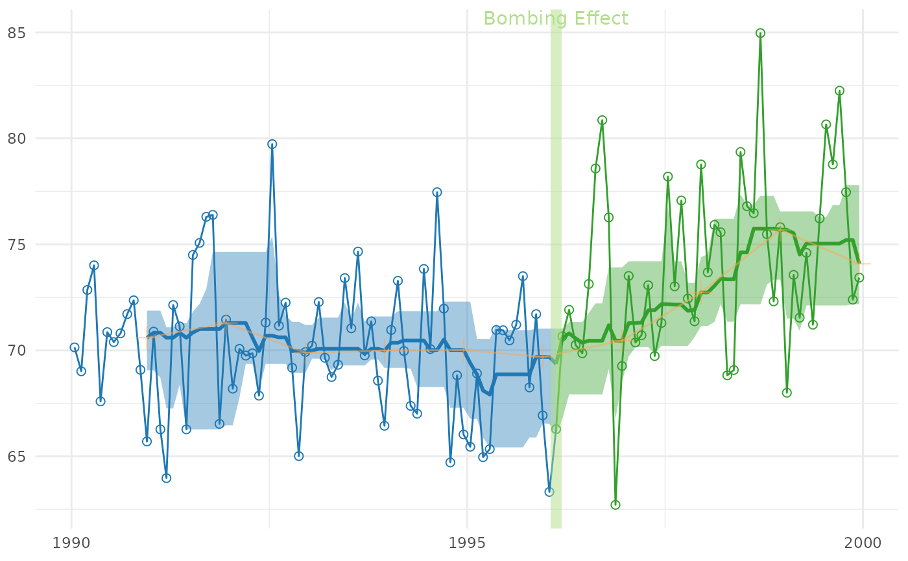

Shows the interrupted time series in Cartesian coordinates without a periodic/cyclic components.
Usage
cartesian_rolling(
ds_linear,
x_name,
y_name,
stage_id_name,
rolling_lower_name = "rolling_lower",
rolling_center_name = "rolling_center",
rolling_upper_name = "rolling_upper",
palette_dark = NULL,
palette_light = NULL,
color_sparse = grDevices::adjustcolor("tan1", 0.5),
change_points = NULL,
change_point_labels = NULL,
draw_jagged_line = TRUE,
draw_rolling_line = TRUE,
draw_rolling_band = TRUE,
draw_sparse_line_and_points = TRUE,
jagged_point_size = 2,
jagged_line_size = 0.5,
rolling_line_size = 1,
sparse_point_size = 4,
sparse_line_size = 0.5,
band_alpha = 0.4,
change_line_alpha = 0.5,
change_line_size = 3,
title = NULL,
x_title = NULL,
y_title = NULL
)Arguments
- ds_linear
The data.frame to containing the data.
- x_name
The variable name containing the date.
- y_name
The variable name containing the dependent/criterion variable.
- stage_id_name
The variable name indicating which stage the record belongs to. For example, before the first interruption, the
stage_idis "1", and is "2" afterwards.- rolling_lower_name
The variable name showing the lower bound of the rolling estimate.
- rolling_center_name
The variable name showing the rolling estimate.
- rolling_upper_name
The variable name showing the upper bound of the rolling estimate.
- palette_dark
A vector of colors used for the dark/heavy graphical elements. The vector should have one color for each
stage_idvalue. If no vector is specified, a default will be chosen, based on the number of stages.- palette_light
A vector of colors used for the light graphical elements. The vector should have one color for each
stage_idvalue. If no vector is specified, a default will be chosen, based on the number of stages.- color_sparse
The color of the 'slowest' trend line, which plots only one value per cycle.
- change_points
A vector of values indicate the interruptions between stages. It typically works best as a Date or a POSIXct class.
- change_point_labels
The text plotted above each interruption.
- draw_jagged_line
A boolean value indicating if a line should be plotted that connects the observed data points.
- draw_rolling_line
A boolean value indicating if a line should be plotted that connects the rolling estimates specified by
rolling_center_name.- draw_rolling_band
A boolean value indicating if a band should be plotted that envelopes the rolling estimates (whose values are take from the
rolling_lower_nameandrolling_upper_name.- draw_sparse_line_and_points
A boolean value indicating if the sparse line and points should be plotted.
- jagged_point_size
The size of the observed data points.
- jagged_line_size
The size of the line connecting the observed data points.
- rolling_line_size
The size of the line connecting the rolling estimates.
- sparse_point_size
The size of the sparse estimates.
- sparse_line_size
The size of the line connecting the sparse estimates.
- band_alpha
The amount of transparency of the rolling estimate band.
- change_line_alpha
The amount of transparency marking each interruption.
- change_line_size
The width of a line marking an interruption.
- title
The string describing the plot.
- x_title
The string describing the x-axis.
- y_title
The string describing the y-axis.
Examples
library(Wats) # Load the package
change_month <- base::as.Date("1996-02-15")
ds_linear <-
Wats::county_month_birth_rate_2005_version |>
dplyr::filter(county_name == "oklahoma") |>
augment_year_data_with_month_resolution(date_name = "date")
h_spread <- function(scores) { quantile(x = scores, probs = c(.25, .75)) }
portfolio <- annotate_data(
ds_linear,
dv_name = "birth_rate",
center_function = median,
spread_function = h_spread
)
cartesian_rolling(
portfolio$ds_linear,
x_name = "date",
y_name = "birth_rate",
stage_id_name = "stage_id",
change_points = change_month,
change_point_labels = "Bombing Effect"
)
